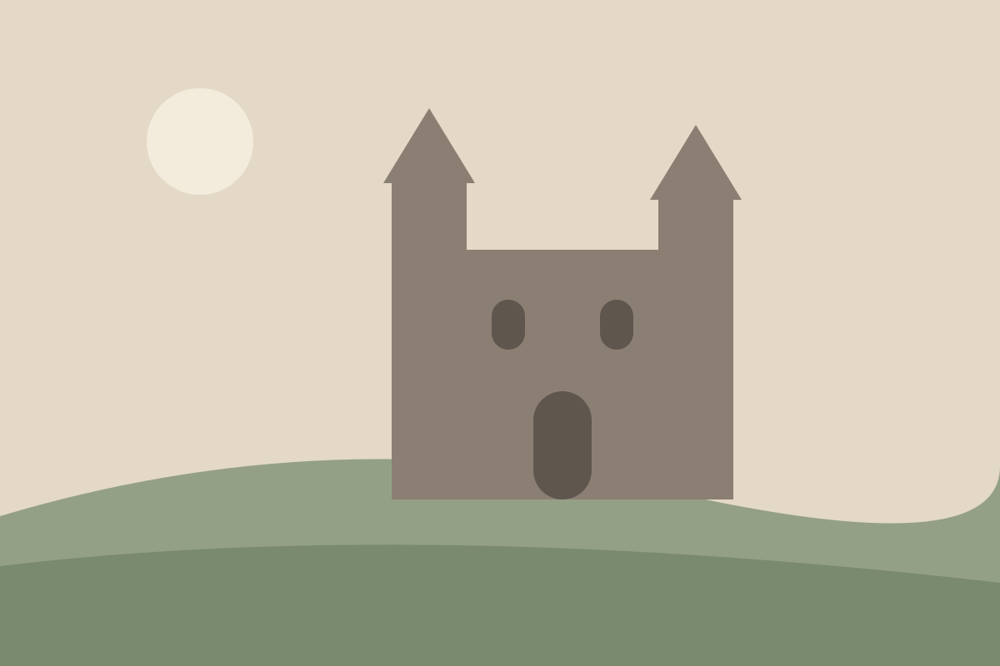
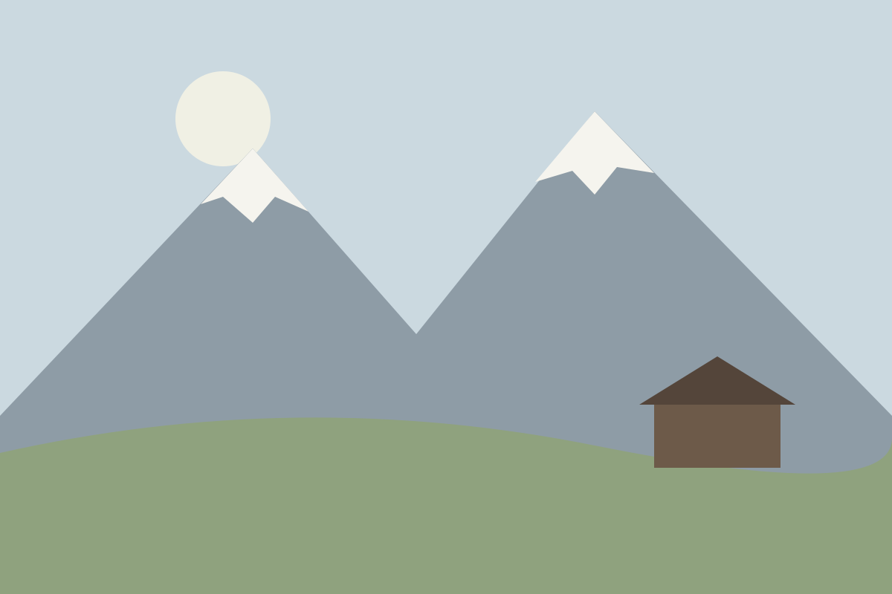
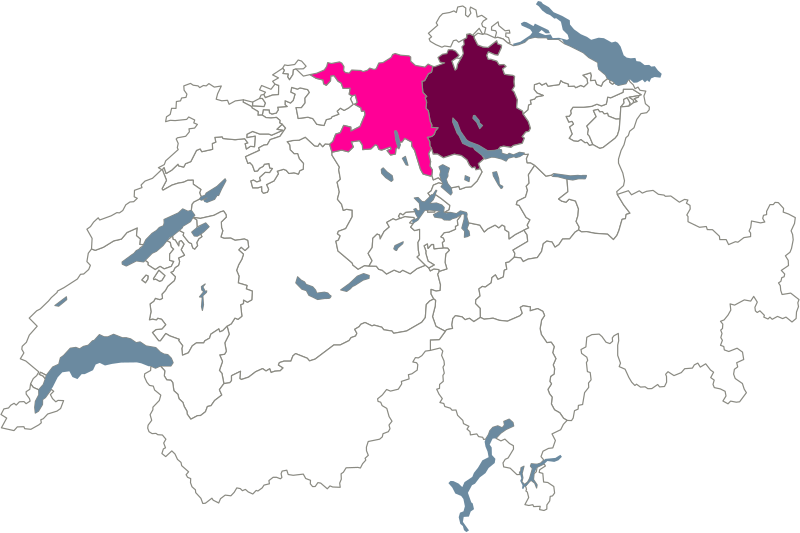

Nie ein Schatten. Abschnitte trennen sich durch Abstand und Flächenwechsel.
0 8px 32px rgba(72, 72, 72, .16). Nur Toast, Dropdown, Tooltip, mobile Leiste und Sticky-Navigation.
Normal, mit Hilfstext
Fokus: 2 px accent-strong
Bitte geben Sie eine gültige E-Mail-Adresse an.

3 / 8Saal unter dem alten Dachstuhl, mit Holzboden und direktem Zugang zum Innenhof.

Auf einem Foto: schwarz mit weissem Halo